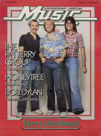

CMnexus
:
Contemporary Christian culture, music, and media.
Magazines
Profiles
Dove Awards
cmnexus.org
CM
nexus
→
Profiles
→
T
Pat Terry
On the cover

December 1979
Contemporary Christian Music
Media coverage
Dec 1979 in
Contemporary Christian Music
"Heaven Bound", by
Ron Velten
Jun 1982 in
Contemporary Christian Music
"His Search for Musical Honesty Leads Pat Terry Home Where He Belongs", by
Karen Marie Platt
Jul 1983 in
Contemporary Christian Magazine
"Pat Terry"
Sep 1983 in
Campus Life
"Mark Heard On Pat Terry's Film At Eleven: A Response", by
Mark Heard
Aug 1988 in
CCM
"Whatever Happened To ...?: Pat Terry", by
Kevin Riggs
Jul 1992 in
CCM
"Christian Musician: Thoughts For Christian Songwriters"
Mar 1993 in
CCM
"In Concert: Mark Heard Memorial Benefit Concert: Massey Auditorium, Belmont University, Nashville, TN", by
Bruce A. Brown
Jul 1997 in
CCM
"Rewind: Evolution of a Songwriter", by
Devlin Donaldson
Albums & reviews:
1974:
Pat Terry
1982:
Humanity Gangsters
Jul 1982 in
Contemporary Christian Music
, by
Thom Granger
5 Jan 1983 in
The Lutheran
, by
Steve Rabey
1983:
Film at Eleven
1983 in
Cornerstone
May 1983 in
MusicLine
Jun 1983 in
Contemporary Christian Magazine
Jul 1983 in
Campus Life
, by
Jim Long
Aug 1983 in
Charisma
, by
Richard Nakamoto
Sep 1983 in
Christian Herald
, by
Ron R. Lee
1984:
The Silence
1984 in
Cornerstone
, by
Jon Trott
Sep 1984 in
Contemporary Christian Magazine
, by
Quincy Smith-Newcomb
Dec 1984 in
The Lutheran
, by
Steve Rabey
Books about Pat Terry
"
The Pat Terry Group (and Pat Terry [solo])
" in
The Encyclopedia of Contemporary Christian Music
(
Mark Allan Powell
,
2002
).
Chapter also includes:
Pat Terry Group
.
CMnexus
(noun)
The magazine index
of modern music
and Christianity
© 2011 CMnexus. Last updated August 2025.
Contact:
Rants and other correspondence to:
editor -AT- cmnexus
-DØT- org
About